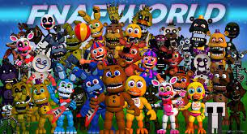
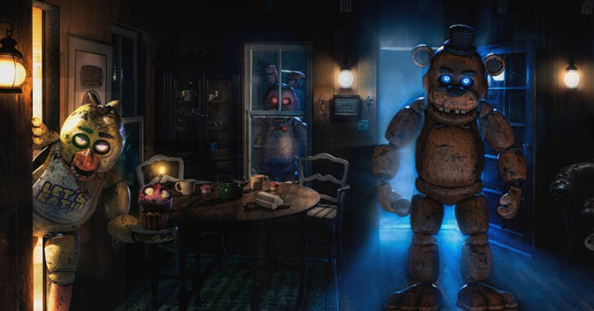

FNAF hry2
FNAF hry2
Five Nights at Freddy's Help Wanted
Něco o hře
Five Nights at Freddy's: Help Wanted (alternativně známá jako Five Nights at Freddy's 8) je hororová videohra pro přežití ve virtuální realitě z roku 2019 vyvinutá společností Steel Wool Studios a publikovaná společností ScottGames. Jedná se o osmou hlavní hru v sérii Five Nights at Freddy's a celkově devátý díl po Ultimate Custom Night z roku 2018. Prezentuje se jako "The Freddy Fazbear Virtual Experience", vytvořený pro fiktivní korporativní entitu Fazbear Entertainment, aby pomohl zlepšit svůj veřejný obraz po sérii oslabujících soudních sporů, po několika incidentech a katastrofách, ke kterým údajně došlo na různých místech. Hra je prezentována z pohledu první osoby a zaměřuje se na řadu miniher založených na předchozích hrách v sérii, ve kterých se hráč musí vyhnout útokům vnímající animatroniky. Kánon hry stanoví, že společnost Fazbear Entertainment najala nejmenovaného nezávislého vývojáře, aby vytvořil videoherní sérii založenou na událostech předchozích sedmi her, než s ním přerušila vazby, a objednala si hru pro virtuální realitu, která měla zlehčit pověsti a přesvědčit hráče, že tyto události byly zcela fiktivní. Vývoj Five Nights at Freddy's: Help Wanted, první licencované hry od Steel Wool Studios, začal v roce 2018 a trval méně než rok. Design hry se inspiroval historií Five Nights at Freddy's napříč všemi médii. Hra byla poprvé oznámena v srpnu 2018 a byla vydána 28. května 2019 pro náhlavní soupravy HTC Vive a Oculus Rift na Microsoft Windows a PlayStation VR na PlayStation 4. Verze hry bez VR byla vydána pro Microsoft Windows a PlayStation 4.
Hratelnost
Hra obsahuje čtyřicet hratelných miniher, ke kterým lze přistupovat z herního centra. Mnoho z těchto miniher znovu vytváří mechaniky předchozích her v sérii, s jejich ovládacími prvky přizpůsobenými tak, aby byly vhodnější pro 3D virtuální prostředí. Minihry jsou rozděleny do skupin podle původní hry a seřazeny podle zvyšující se obtížnosti. Ve všech minihrách prohra vede k opatrnosti ve skoku. Původní Five Nights at Freddy's inspiruje pět miniher, které obnovují každou z pěti nocí (úrovní) hry. Nachází se v kanceláři bezpečnostní stráže, hráč musí přežít celou noční směnu tím, že šetří energii a vyhýbá se útokům čtyř animatroniky, které lze pozorovat prostřednictvím bezpečnostních kamer. Všechny vizuální prvky hry jsou aktualizovány z 2D renderů na 3D modely a všechna tlačítka a ovládací prvky jsou rozloženy kolem 3D kanceláře, aby s nimi hráč mohl fyzicky komunikovat. Například kamerový záznam, který dříve zakrýval celou obrazovku hráče, se zobrazuje na monitoru na stole hráče. Pět nocí ve Freddyho 2 a Pět nocí ve Freddyho 3 jsou upraveny podobným způsobem, s aktualizovanými vizuálními prvky a konkrétním uživatelským rozhraním. Five Nights at Freddy's 4 inspiruje šest miniher. Minihry Night Terrors přizpůsobují hratelnost svých hlavních úrovní, ve kterých musí hráč odvrátit animatroniku od vstupu do své ložnice strategickým otevíráním a zavíráním dveří. Některé z těchto miniher umožňují hráči pohybovat se "teleportací" na různá místa v dohledu, což je běžná metoda lokomoce VR. První úroveň obsahuje Funtime Freddy, druhá úroveň obsahuje Nightmarionne, třetí úroveň obsahuje Circus Baby a čtvrtá úroveň obsahuje Nightmare Fredbear. Minihry "Fun with Plushtrap" a "Fun with Balloon Boy" jsou upraveny jako minihry Dark Rooms, ve kterých musí hráč použít baterku k nalezení animatroniky kolem neosvětlené oblasti. Five Nights at Freddy's: Sister Location inspiruje devět miniher. Minihry Parts & Service vyžadují, aby hráč prováděl údržbu animatroniky otevřením přihrádek a výměnou částí kolem těla, tentokrát na Bonnie, Chica, Freddy a Foxy. Oprava ventilace probíhá v údržbové šachtě, ve které musí hráč řešit hádanky otáčením pák a mačkáním tlačítek při odpuzování animatroniky čelovkou, hlavně Mangle a Ennard. Hra One Dark Rooms s Funtime Foxy je také adaptací sister location.
Příběh
Fazbear Entertainment se stala velmi nepopulární kvůli několika incidentům a katastrofám, ke kterým údajně došlo na různých místech v průběhu let, které byly zavedeny jako městské legendy. Tento problém je zhoršen hororovou videoherní sérií založenou na legendách, vytvořenou nejmenovaným nezávislým vývojářem. Ve snaze zvrátit špatnou pověst, kterou tyto zvěsti daly společnosti, fazbear Entertainment objednal "Freddy Fazbear Virtual Experience", hru virtuální reality, která měla zlehčit pověsti a přesvědčit hráče, že tyto události byly zcela fiktivní. Tento příběh je však v rozporu se šestnácti kazetami skrytými po celé hře, které obsahují protokoly zaznamenané jedním z vývojářů hry. Pásky, které jsou míněny jako varování pro budoucí hráče, odhalují soudní spor, který se děje během vývoje hry, zahrnující incident s bývalým zaměstnancem Jeremym, který ohrozil dokončení hry. Kromě toho pásky odhalují, že Fazbear Entertainment najal nejmenovaného nezávislého vývojáře, aby vytvořil videoherní sérii založenou na údajných legendách, než s ním přerušil vazby; hry byly součástí propracovaného triku, jak zdiskreditovat pověsti obklopující společnost. A co je nejdůležitější, pásky varují před škodlivým kódem, který byl do hry nahrán ze staré animatronické obvodové desky. Tento kód má podobu zlověstné postavy známé jako Glitchtrap, která se objevuje jako humanoid v kostýmu králíka. Glitchtrap je nakonec odhalen jako digitální duch Williama Aftona, spoluzakladatele Fazbearova sériového vraha, který se pokouší uniknout ze hry sloučením s hráčem. Předpokládá se, že obvodová deska obsahující kód byla získána z pozůstatků "Scraptrap", který byl vlastněn Aftonem.
Five Nights at Freddy's AR: Special Delivery
Něco o hře
Five Nights at Freddy's: Special Delivery je hororová videohra o přežití s rozšířenou realitou z roku 2019 vyvinutá a publikovaná společností Illumix pro Android a iOS. Jedná se o druhý spin-off v sérii Five Nights at Freddy's a desátý zápas celkově. Hra, která se prezentuje jako animatronická půjčovna vytvořená společností Fazbear Entertainment, čerpá inspiraci z historie Five Nights at Freddy's napříč všemi médii a pokračuje v příběhu založeném v Five Nights at Freddy's: Help Wanted, překlenuje propast mezi ní a jejím pokračováním Five Nights at Freddy's: Security Breach, vydáno v roce 2021. Hra je prezentována z pohledu první osoby s primárním zaměřením na baterku hráče a ovládaný šok. Hráč se může volně pohybovat po svém domě, komunikovat s animatronikou a odemykat nové animatroniky a skiny tím, že je porazí. Mimo hlavní hru je hráč schopen zachránit animatroniku za díly a může také poslat svou vlastní animatroniku do domovů svých přátel. Boj se zaměřuje na nalezení statického na základě toho, kde je animatronika, a dává jim řízený šok, když se napadají na hráče.
Hratelnost
Hra obsahuje hru s rozšířenou realitou založenou na poloze, podobně jako Pokémon Go. Četné nefunkční animatroniky jsou posílány do domova hráče, ze kterého musí hráč přežít. Hráč má na pomoc řadu nástrojů, včetně baterky a řízeného tlumiče. Hráč může také zachránit animatroniku za součásti a poslat svou vlastní animatroniku do domovů svých přátel. Hra dostává průběžné aktualizace přidávající nové postavy, skiny pro animatroniku a nové herní funkce.
Příběh
Začíná to jednoduchým předpokladem - zaregistrujte se do služby Fazbear Funtime Service, abyste "už nikdy nebyli sami". Ale jak se příběh začíná odvíjet, hráči si uvědomí, že se možná přihlásili k více, než si vyjednali. Nefunkční animatronika je dodávána k jejich prahům pro řadu děsivých setkání. Doručená pošta poskytuje mnoho tipů, jak se s tím vypořádat, stejně jako některé e-maily, které nejsou určeny k odeslání hráči. Jedna série e-mailů vypráví příběh muže jménem Luis, který se snaží informovat ženu Ness o zprávách s červenou vlajkou vyvolaných jejími škodlivými a urážlivými vyhledávacími slovy. E-maily naznačují, že je pod kontrolou Williama Aftona, jednoho ze spoluzakladatelů Fazbear Entertainment a tajně dětského sériového vraha, o kterém se předpokládalo, že zemřel při požáru před několika lety. Ness je silně naznačena, že je Vanny z Five Nights at Freddy's: Help Wanted, protože "Ness" je zkratka pro Vanessu (což je pravděpodobně Vannyho skutečné jméno) a Vanny byl také posedlý Aftonem poté, co se setkal s jeho digitální podobou při testování jednoho z Fazbearových produktů. Další série e-mailů vypráví příběh zaměstnanců společnosti Fazbear Entertainment, kteří skenují obvodové desky staré animatroniky pro "Virtuální zážitek Freddyho Fazbeara".
Five Nights at Freddy's: Security Breach
Něco o hře
Five Nights at Freddy's: Security Breach (alternativně známá jako Five Nights at Freddy's 9) je hororová videohra o přežití z roku 2021 vyvinutá společností Steel Wool Studios a vydaná společností ScottGames. Jedná se o devátý hlavní díl série Five Nights at Freddy's a celkově třináctou hru, která se odehrává po událostech Five Nights at Freddy's: Help Wanted. Hra se liší od ostatních dílů série, obsahuje pouze jednu noc místo pěti a má volně se pohybující hratelnost. Hráč se ujme role mladého chlapce jménem Gregory, který se musí vyhýbat nepřátelským animatronickým postavám a nočnímu strážci ve velkém nákupním centru, odhaluje svá morbidní tajemství a snaží se přežít až do rána. Hra byla vydána digitálně 16. prosince 2021 pro Microsoft Windows, PlayStation 4 a PlayStation 5, přičemž porty pro další platformy by měly být vydány později. Fyzické vydání pro PlayStation 4 a PlayStation 5 bylo vydáno 1. dubna 2022. Hra získala smíšené recenze, s chválou za její estetickou přitažlivost, ale kritikou za její technické problémy. Bezplatné rozšíření DLC s názvem Ruin bylo oznámeno k vydání v roce 2023.
Hratelnost
Hráč převezme kontrolu nad mladým chlapcem jménem Gregory, který je uzamčen ve velkém nákupním centru plném vražedné animatroniky a musí dokončit četné mise, aby přežil noc, aby mohl uniknout. Animatronika ve stylu 1980 nebo "Glamrock", která se nachází v celém nákupním centru, zahrnuje Glamrock Freddy, Glamrock Chica, Montgomery Gator, Roxanne Wolf, Daycare Attendant, Glamrock Endoskeletons, Wind-Up Music Men a DJ Music Man. Gregory se také setká s jinými typy nepřátel, jako je Vanessa, bezpečnostní stráž; Vanny, zkorumpovaná a vražedná žena v králičím obleku; a roboti S.T.A.F.F., kteří mohou upozornit nepřátele na Gregoryho polohu, pokud jsou spatřeni/ nabídnout mu mapu, pokud jsou roboti S.T.A.F.F. poskytovatelem map. Všichni nepřátelé budou v průběhu noci silnější, takže se hráč musí přizpůsobit svému okolí, aby přežil. Gregory se může skrýt, aby se vyhnul nepřátelům, nebo srazit předměty, aby je rozptýlil. Běh odvádí výdrž a pokud je nízká, Gregory se nebude moci rychle pohybovat. Některé konfrontace budou vyžadovat použití strategie, aby se zabránilo chycení. Gregory má baterku, kterou může použít k vidění na tmavých místech a na zápěstí nosí zařízení zvané "Faz-Watch", kde má přístup k misím, kamerovému systému a své poloze v nákupním středisku, stejně jako komunikovat s Freddym. Svítilna má však omezený výkon a je třeba ji často dobíjet. Existují také dva druhy zbraní, které lze použít k dočasnému omráčení některých nepřátel: "Faz Camera" a "Fazerblaster". Kamera Faz dokáže omráčit všechny náchylné nepřátele před hráčem, ale mezi jednotlivými použitími má dlouhou dobu dobíjení. Fazerblaster může být vystřelen častěji než Kamera Faz, se šesti výstřely před nutností dobíjení, ale pouze omráčí jednu animatroniku nebo S.T.A.F.F. a pouze úspěšným výstřelem do hlavy.
Příběh
V Mega Pizzaplex Freddyho Fazbeara se velké nákupní centrum soustředěné kolem animatronických maskotů Glamrock Freddy Fazbear (Kellen Goff), Glamrock Chica (Heather Masters), Montgomery "Monty" Gator (Cameron Miller) a Roxanne "Roxy" Wolf (Marta Svetek) připravují na vystoupení pro publikum. Během představení Freddy utrpí technickou poruchu a vypne se, zhroutí se na jevišti a zkrátí představení. Freddy se probouzí zpět ve svém pokoji v Rockstar Row, kde zjistí, že mladý chlapec jménem Gregory (Marta Svetek) se skrývá uvnitř jeho žaludeční přihrádky. Vanessa (Heather Masters), bezpečnostní noční stráž a pouze člověk v personálu na noc, nařídí všem animatronikům a zaměstnaneckým robotům - z nichž většina se záhadně stala agresivními, aniž by o tom věděla - aby hledali Gregoryho. Freddyho porucha a Gregoryho strach z Vanessy však způsobí, že neuposlechne rozkazy stráže a místo toho navede Gregoryho do haly Pizzaplexu, jen aby se nákupní centrum na noc zavřelo a uvěznilo Gregoryho uvnitř. Freddy nadále pomáhá Gregorymu přežít noc, dokud nenajdou jinou cestu ven nebo dokud se přední dveře znovu neotevřou v 6:00.m. Poté, co unikne Vanessě a animatronice a uchýlí se do bezpečnostní kanceláře, se Gregorymu podaří získat přístup ke sledovacímu systému nákupního centra. Ve snaze získat bezpečnostní odznaky na vysoké úrovni, aby se dostal do určitých oblastí nákupního centra, Gregory vstoupí do denní péče o nákupní středisko a setká se s obsluhou denní péče (Kellen Goff) ve své přátelské, ale arogantní podobě Slunce. Výpadek proudu donutí Gregoryho konfrontovat Sunovo nepřátelské alter ego, Moona. Gregorymu se podaří obnovit napájení školky, ale Sun vykopne Gregoryho za to, že zhasl světla a upozorní animatroniku na jeho polohu, než ho zachrání Freddy.